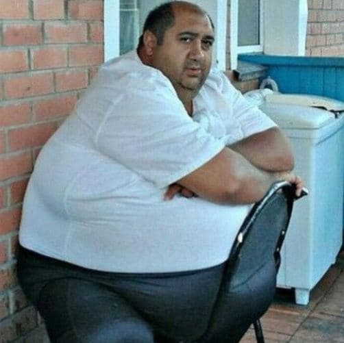
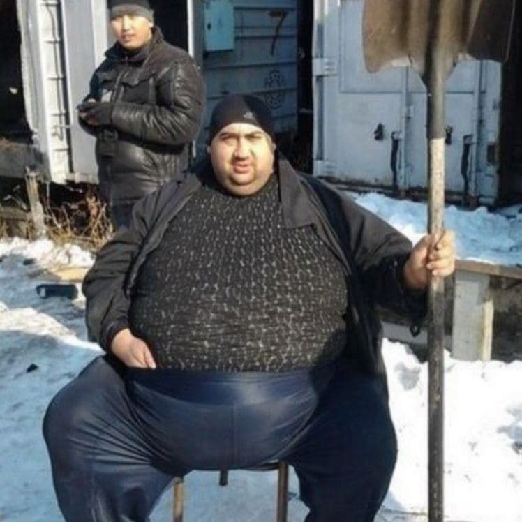
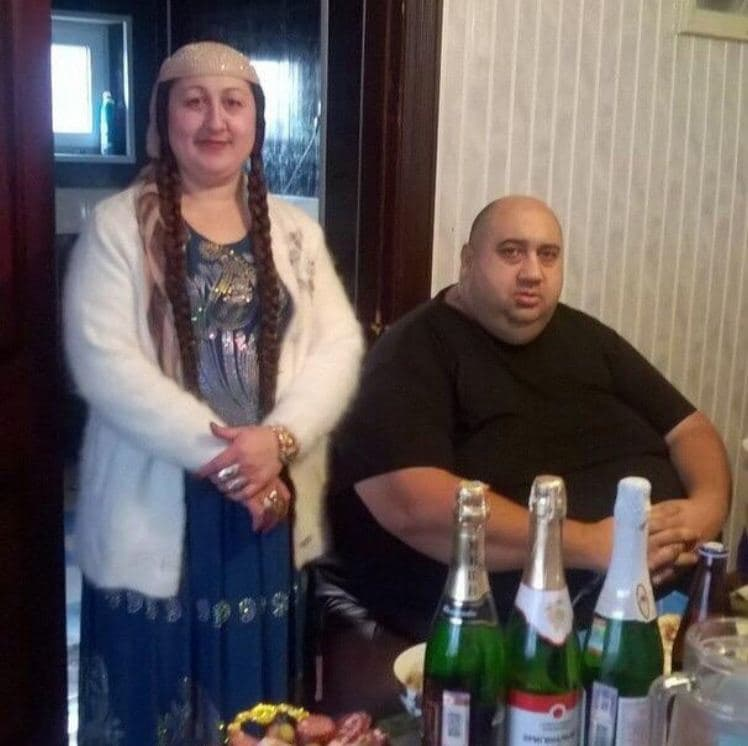
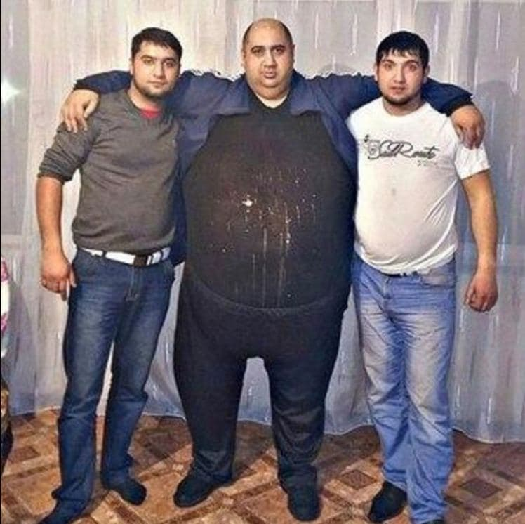
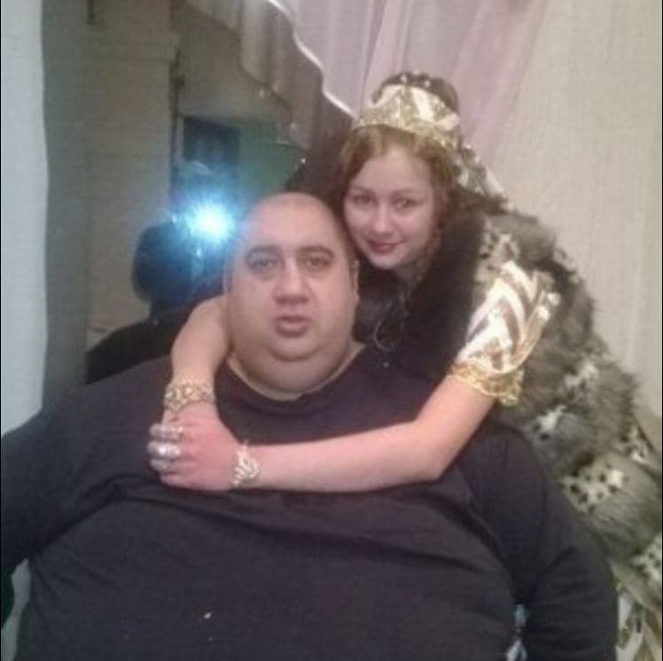

Тарэкъ Таироваъ
Тарэкъ Таироваъ - брат Тарiкъа Таироваъ.
Моложе брата на 10 лет. Родился в 1979 году также в Азербайджане.
Большой любитель еды, поэтому его вес превышает 300 кг.
Стал очень популярным по всему миру благодаря своему внешнему виду,
который привлекает внимание абсолютно всего населения планеты.




